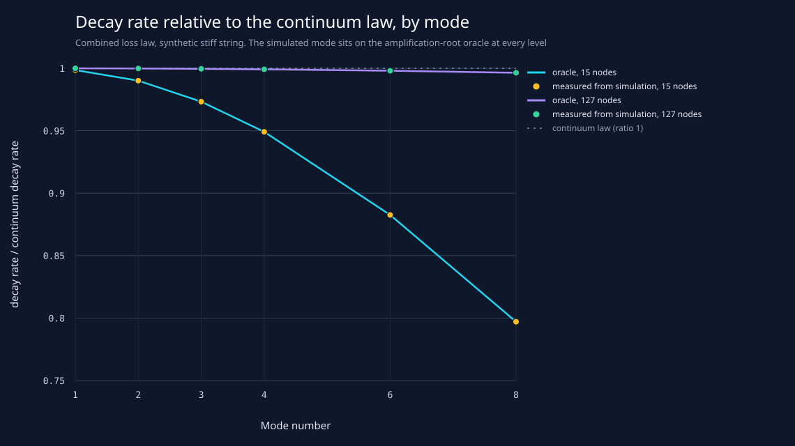
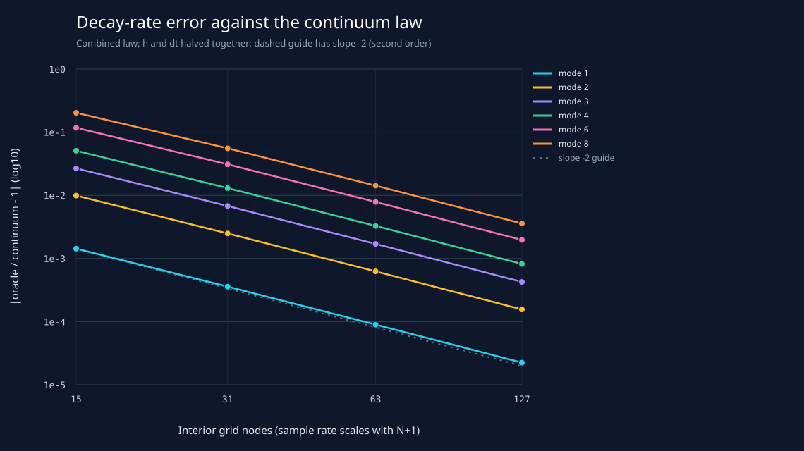
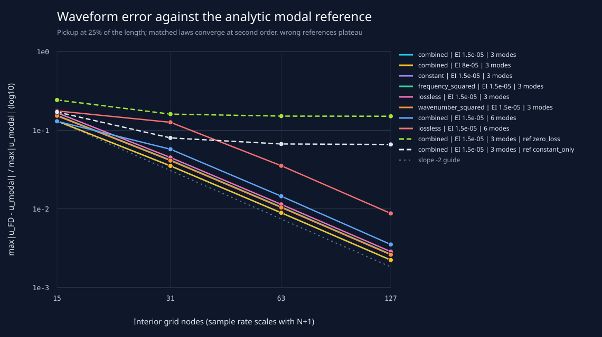

This is not a measured Iranian setar, a fitted loss law, an acoustic or perceptual result, or a host screenshot. The loss magnitudes are arbitrary synthetic values.
Decay CSV SHA-256: 9cc267a53b3b08291780e83761ba4df046837b10b796ae3e262dc06771a4f1ad (96 rows).
Waveform CSV SHA-256: bcf7a57395817de8862ef1ec33403fb6290aeca9852a6bb3ef2993b90ed76ebd (40 rows).
Worst simulated-versus-oracle decay disagreement:
5.581e-10 (relative). Observed decay-error
order at the finest refinement pair: 1.98 to 2.00.



| Series | 15→31 | 31→63 | 63→127 |
|---|---|---|---|
| combined | EI 1.5e-05 | 3 modes | 1.90 | 1.98 | 2.00 |
| combined | EI 1.5e-05 | 3 modes | ref constant_only | 1.09 | 0.26 | 0.02 |
| combined | EI 1.5e-05 | 3 modes | ref zero_loss | 0.60 | 0.08 | 0.01 |
| combined | EI 1.5e-05 | 6 modes | 1.18 | 1.99 | 2.04 |
| combined | EI 8e-05 | 3 modes | 1.90 | 1.98 | 2.00 |
| constant | EI 1.5e-05 | 3 modes | 1.89 | 1.98 | 2.00 |
| frequency_squared | EI 1.5e-05 | 3 modes | 1.89 | 1.98 | 2.00 |
| lossless | EI 1.5e-05 | 3 modes | 1.89 | 1.98 | 2.00 |
| lossless | EI 1.5e-05 | 6 modes | 0.48 | 1.83 | 2.01 |
| wavenumber_squared | EI 1.5e-05 | 3 modes | 1.89 | 1.98 | 2.00 |